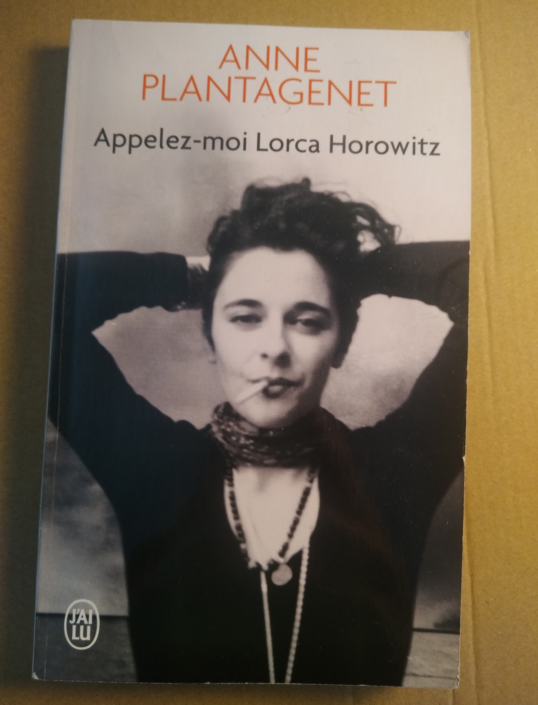
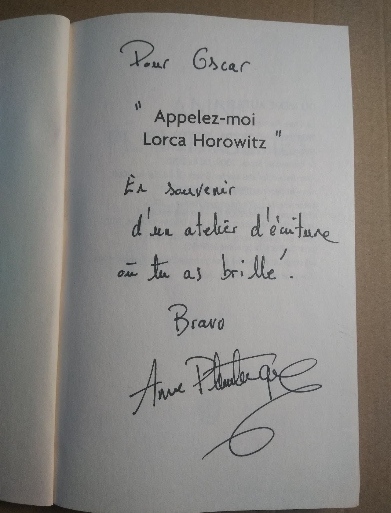

Nouvelle - Stage d'écriture avec Anne Plantagenet
En classe de seconde au Lycée Pablo Picasso, notre professeur de français nous a fait suivre un stage d'écriture de nouvelles avec l'écrivaine Anne Plantagenet, à cette occasion j'ai écrit cette nouvelle. Elle a été remarquée parmi les deux meilleures nouvelles, aussi, l'autrice m'a offert son livre et me l'a dédicacé.
La Nouvelle
Baer
Français
Oscar
2nde 3
Le camion s'arrête, nous sortons, je claque la portière, les fusils dans les mains nous partons à la chasse. Nous cherchons un emplacement pour pouvoir attendre qu'un animal se pointe.
Quand soudain nous entendons des gémissement d'ours, on l'entend se rapprocher pas à pas, nous nous éloignons du danger doucement en braquant nos fusils vers le bruit.
Quand nous entendons le bruit sourd du piège que nous avions placé précédemment au pied d'un arbre caché sous des feuilles de chênes, après ce claquement, nous nous dirigeons vers le bruit calmement. Je vis l'ours, Pierre s'étant trop approché se prit le coup de patte de la bête, je tire sur l'ours au moins trois fois, tout d'un coup je ressens quelque chose, je commence à voir flou, je me sens mal, je me saisis de mon couteau à une seule main et je le plante une dizaine de fois de suite dans l'animal, j'entends une résonance qui me dit d'arrêter, j'arrête, je me calme et je vois quelqu'un à côté de moi, c'est Pierre, ma vue redevient normale, j'ai oublié ce que j'avais fait, mon collègue me dit qu'il m'a vu en train de me déchaîner sur l'animal.
Je le supplie de ne pas le dire au chef et il me le promet. Il me dit que nous ne pouvons donc pas prendre l'ours avec nous parce que dans l'état qu'il est les autres collègues se douteront de quelque chose. Je commence à désamorcer le piège tandis que Pierre prend les pelles toutes neuves qui étaient au fond du camion. Nous trouvons un endroit pour enterrer l'ours. Il est déjà 18h, nous nous saisissons des pelles, nous commençons à creuser et nous finissons 1 heure plus tard.
Nous devons désormais porter l'ours, c'était un mâle, il doit faire dans les six cent kilos.
Malgré son poids, à deux nous arrivons doucement à le traîner vers le trou. A dix centimètres de la cavité, nous le poussons de toutes nos forces pour pouvoir ensuite le recouvrir de terre et de cailloux. Une fois l'animal enterré, je commence à remettre les pelles au fond du véhicule et Pierre se prépare à démarrer. Je me mets sur le siège à côté de lui, je pose mon fusil, je mets ma ceinture et le camion démarre. Nous nous dirigeons rapidement vers l'entrepôt pour pouvoir ranger le camion et enfin rentrer chez nous. Nous arrivons trente minutes en retard et au loin, au fond de l'allée, nous pouvons déjà voir le directeur qui nous attend avec impatience pour fermer le hangar où est censé se trouver notre véhicule de chasse. Nous nous excusons du retard mais Pierre se fait convoquer dans son bureau et le directeur me dit de rentrer chez moi. Je pense que Pierre a été invité dans l'office du chef à cause du peu d'animaux que nous avions rapporté. Au lieu de rentrer chez moi, calmement, je me cache dehors, sous la fenêtre ouverte pour entendre leur discussion en espérant fortement que Pierre ne parlera pas de l'incident d'aujourd'hui.
Mais soudain, en entendant mon collègue me dénoncer au chef, je commence à avoir des vertiges, je sens des pulsions impossibles à contrôler de plus en plus fortes et rapides. Je vois mon bras se diriger vers le fusil, ma vue se trouble. J'ai l'impression d'être endormi, de rêver, je ne sais pas où je suis, je vois l'animal au loin, l'ours que j'avais tué encore vivant qui me fonce dessus à l'horizon, il a toujours les impacts de mes munitions et les coups de couteau que je lui avais infligé, pourtant il me fonce dessus avec une rage que je n'avais jamais vue, sentie auparavant, une rage de vengeance. Il se rapproche, il est environ à 40 mètres de moi, à 30 mètres maintenant, à 20 mètres, je saisis mon fusil à deux mains, à 10 mètres, je m'empresse de recharger, il est désormais à 5 mètres de moi, je vise et je lui tire huit fois dans son corps déjà endommagé par la première chasse, à 3 mètres, il est juste en train de boiter, à 2 mètres, je lâche mon fusil, je prends mon couteau et lui enfonce dans son corps déjà endommagé. La bête arrive quand même à me sauter dessus. Je me réveille en sursaut, je regarde dehors, il fait nuit, je vois trois heures sur ma montre. Soudain, je sens une migraine effroyable. En me retournant je vois mon collègue criblé de balles de fusils et mon patron avec mon couteau dans sa tête.
J'entends des sirènes de police retentir au loin, je panique, je venais de tuer mon patron et un de mes collègues. Je prends mes jambes à mon cou, je me cache derrière un des hangars, j'escalade la grille de derrière et je fuis dans la forêt. Deux minutes après je me rend compte que mes chaussures sont plainent de sang et en entendant des pas à dix mètres de moi, je double de vitesse, je lâche mon fusil pour aller plus vite, j'aperçois au loin une route avec une lumière rouge et bleu qui clignote.
La police est partout, ils ont complètement entourés l'entrepôt et une partie de la forêt, il se rapprochent de tous les côtés en même temps. J'essaye de monter à un arbre mais un des policiers me voie. Il sort sont taser, je ressent une décharge dans mon dos. Je tombe violemment sur le sol et la police me menotte. Tout d'un coup, je sens la même chose que la fois où j'ai tué l'animal je le revoie, cette fois, je ne peut pas me défendre, de toute façon c'est terminé, il arrive et me plaque contre le sol, je sens une douleur abominable dans mon dos. Je ne sens plus rien après une petite minute, mais l'animal continu, il se déchaîne, pourtant je suis mort depuis un moment.
Preuves

Couverture du livre

Dédicace de l'autrice